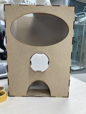
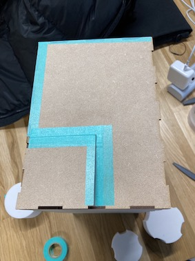

最終課題
製作作品
ガチャガチャ
完成作品

当初作った取手部分では、長さが足りなく、また前後どちらとも穴にすっぽりハマるサイズ であったため、ガチャガチャをスムーズに回すことができなかった。
そこで
製作過程

取っての部分を3回製作したが、1回目は、四角の部分にカプセルが入らなかった。
2回目は、直径の設定を間違えてしまい箱の穴に通らなかった。
3回目は、機械不良により部品が欲しかった長さまで作れなかった。
4回目、制作中
前のページへ戻る